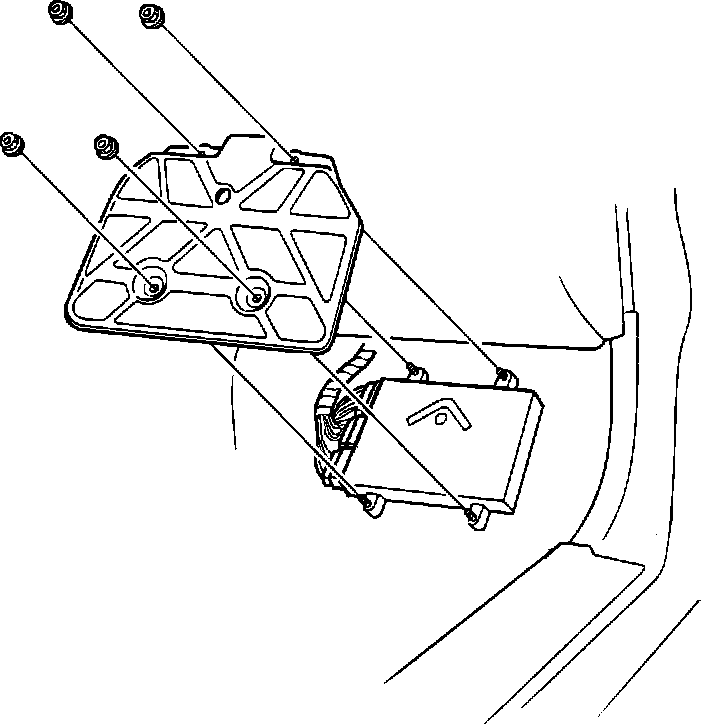

Engine Control Module: Service and Repair
PGM-FI Control Unit Removal:

CAUTION: To prevent Electrostatic Discharge from damaging the Engine Control Module (ECM), touch a grounded area before handling the ECM.
1. Turn off ignition switch.
2. Disconnect negative battery cable.
NOTE: Disconnecting the negative battery cable also cancels the anti-theft/radio presets and clock settings. Make note of the presets (and anti-theft radio codes if so equipped) before removing the fuse.
3. Lift carpet in front passenger footwell.
4. Remove cover screws.
5. Remove ECM mounting screws.
6. Remove ECM from vehicle.
7. Reverse procedure to install. Insure all connections to ECM are tight and secure.